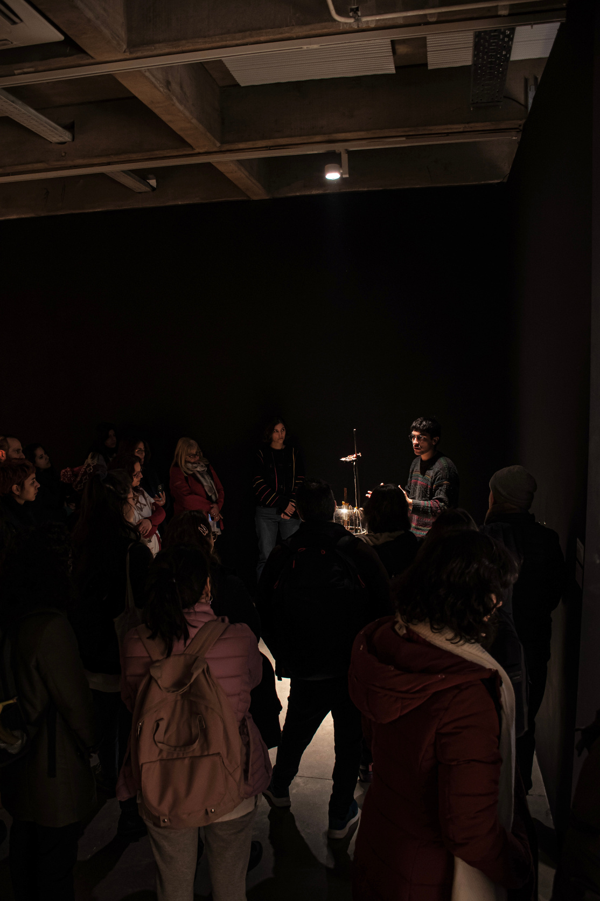
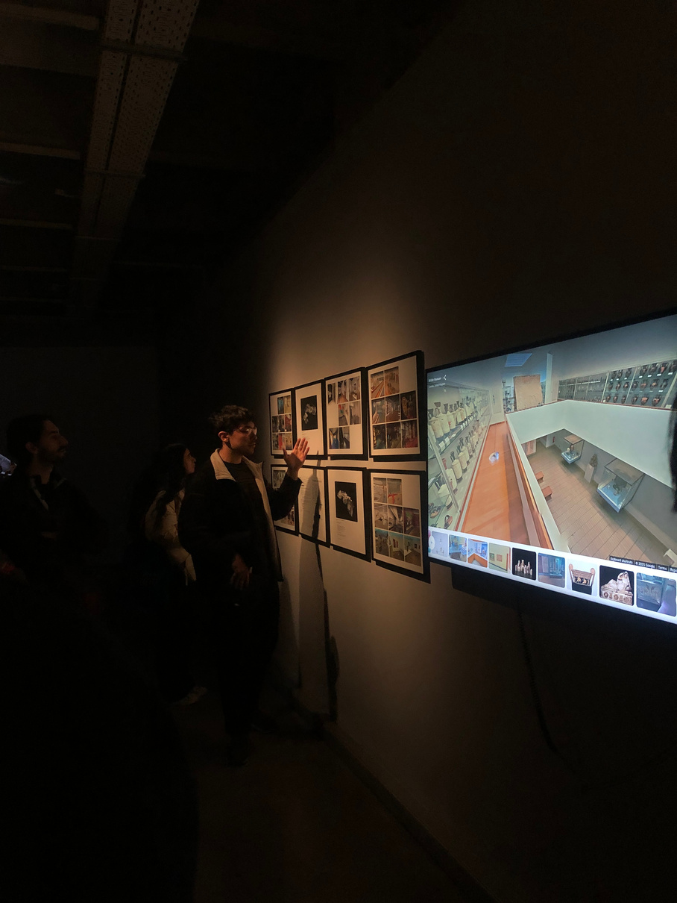
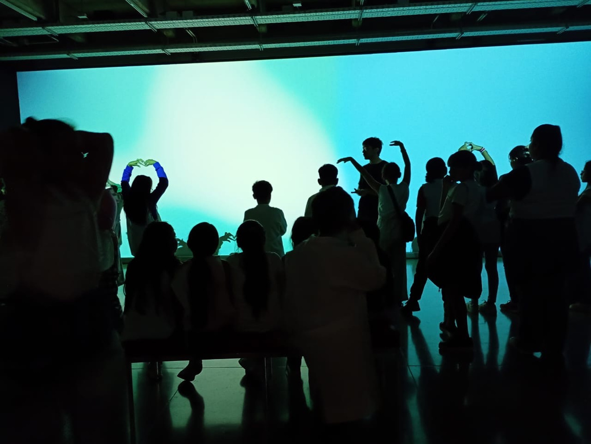
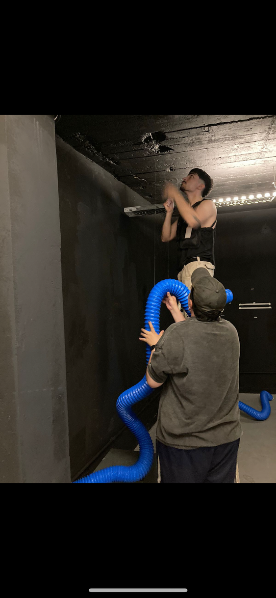
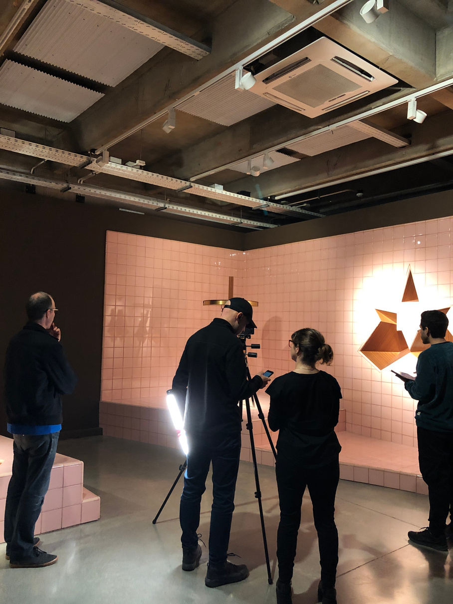
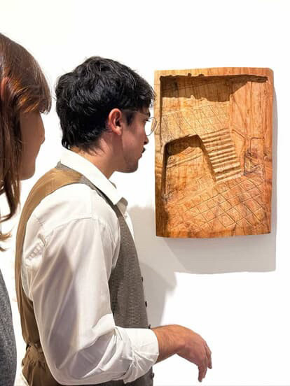

LICENCIADO EN CURADURIA / MASTER EN COMUNICACIÓN
TOBIAS DIAZ
Llevo desde 2024 involucrándome profesionalmente en el campo cultural. Diseñé y ejecuté programas de mediación
para la Fundación Andreani que atendieron a más de 500 visitantes mensuales, adaptando contenidos técnicos
para audiencias diversas.
SOBRE MÍ
01
EXPERIENCIA
CATEDRAL DE BILBAO
2026, TÉCNICO EN ATENCIÓN AL VISITANTE


30.000 visitantes en el periodo trabajado, brindando: Dinamización y realización de visitas guiadas adaptadas para público general y grupos profesionales. A su vez, la atención e información bilingüe al visitante, promoviendo orden y fluidez en los itinerarios. Por otro lado, la gestión económica de taquilla y control de stock/pedidos en la tienda oficial.
02
FUNDACION ANDREANI
2024-2025, MEDIADOR CULTURAL


Gestión de grupos de hasta 60 personas en entornos museísticos, garantizando la calidad del relato institucional y la fidelización del público a través de estrategias de mediación crítica.
03
GALERIA URRA HIP-HIP
2024, ASISTENTE DE GALERÍA DE ARTE

Atención al cliente y asesoramiento comercial para coleccionistas, facilitando el proceso de venta mediante un conocimiento profundo del mercado de arte y la producción de los artistas residentes.
04
MACAB (MUSEO DE ARTE CONTEMPORANEO)
2025, ASISTENCIA EN MONTAJE DE OBRA


Asistencia técnica en la instalación de exhibiciones de gran formato, colaborando estrechamente con artistas y curadores para la correcta implementación de requerimientos espaciales y lumínicos.
05
GALERIA PASTO
2024-2025, ASISTENTE DE GALERÍA

Soporte operativo en la gestión de trastienda e inventario, incluyendo el acondicionamiento, embalaje técnico para transporte nacional e internacional y actualización de bases de datos.
CONTACTA
CONMIGO
CONMIGO
ACCESO A MAS PROYECTOS
LLAMAME AL 637 89 19 26
ESCRIBIME EN TOBIAS.BEME@GMAIL.COM
ESCRIBIME EN TOBIAS.BEME@GMAIL.COM
ESPAÑA.